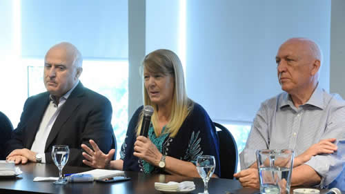

Real Chubut - Agencia de Noticias


Juntos por la ancha avenida del medio

Se dejaron ver juntos Lifschitz, Bonfatti, Fein y Margarita Stolbizer para marcar el andarivel por el que transitarán la campaña, tan lejos del macrismo como del kirchnerismo. Todavía no definen qué candidatura apoyarán
El socialismo, el partido de Margarita Stolbizer y Libres del Sur reeditaron ayer la foto que ratifica el espacio común que comparten para esta campaña electoral, aunque todavía sin tener en claro qué candidatura apoyar. "Lo importante es el proyecto, los nombres vendrán después", dijo el gobernador Miguel Lifschitz ayer, en el hotel céntrico hasta donde la fundadora del GEN llegó para mostrarse junto al candidato a gobernador y presidente del PS, Antonio Bonfatti, y a los referentes locales del espacio liderado por Humberto Tumini. Lo único que sonó a revelación en boca de Lifschitz fue su probable destino como cabeza de lista de candidatos a diputados. De tan difusa que está la candidatura presidencial tras la cual alinearse, insinuaron hasta la posibilidad de que la incógnita termine siendo alguien que provenga de alguna organización civil, y no de un partido político. El todavía indeciso Roberto Lavagna es "solo una posibilidad más" y Sergio Massa se sentó en la reciente Alternativa Federal, espacio inaugurado el lunes y que tanto el ex ministro de Economía como Stolbizer saludaron con sendos videos. "Eso tiene identidad peronista, y nosotros tenemos identidad progresista o socialdemócrata, como quieran llamarle, lo que no quita que a futuro podamos dialogar", cerró y no tanto la ex legisladora bonaerense.
"Nos reunimos con diferentes dirigentes porque ha llegado la hora a la Argentina del encuentro y la construcción colectiva entre quienes compartimos la agenda progresista y popular, planificando el trabajo en común, abriendo el diálogo tanto a partidos políticos afines como a quienes llevan adelante esta agenda desde distintas esferas de nuestra sociedad, que debe tener un claro contenido, una propuesta programática que pueda volver a poner al país en el camino del desarrollo con inclusión social, del crecimiento de la economía y también de la justicia social", abundó el gobernador al salir de la conferencia.
El encuentro público se hizo con el propósito de instalar sus fichas en el tablero de la política nacional de cara a los comicios de octubre. Y otra vez procuraron ponerse lejos y equidistantes de Cambiemos y del kirchnerismo. "La sociedad no puede resistir una desilusión más", dijo Lifschitz, que también anheló "integrar una Legislatura que reforme la Constitución provincial". Sonó a anticipo de lo que el socialismo inscribirá en el cierre de listas que operará el próximo viernes 22.
Stolbizer consideró imprescindible discutir un proyecto de país desde el progresismo. "Con Lifschitz coincidimos en la necesidad de un nuevo espacio para este 2019, donde lamentablemente hay que entender que la campaña electoral se da en un contexto de tremenda angustia para los argentinos que vienen sufriendo el fracaso de este gobierno, que asumió con una promesa de cambio, y no solamente no cambió, sino que no arregló nada y empeoró la herencia que había recibido, aumentando la pobreza y la inflación".
La fundadora del GEN marcó como asignatura que sigue pendiente una reforma impositiva: "Algo que no hizo ni el kirchnerismo teniendo la mayoría absoluta en las cámaras ni tampoco este gobierno. Siguen apostando, demostrando que no son tan diferentes, a que los privilegios y las concesiones impositivas las reciban los sectores más poderosos, esperando que en algún momento derramen", opinó.
Como en 2015, cuando se postuló para presidenta en este espacio, la bonaerense enumeró ejes de gobierno: "Discutir que los trabajadores no paguen ganancias, que se exima del IVA a los productos de la canasta básica, a las tarifas de energía eléctrica. Hay que discutir una reforma donde efectivamente paguen más lo que más tienen", y reformar el sistema financiero. "Un gobierno progresista no permitiría que quien refinancie su tarjeta de crédito deba pagar 90% de interés", dijo.
Ya que los habían convocado, los periodistas quisieron saber qué candidatura presidencial los atrae más. Pero fueron remisos. Ante la foto que Lifschitz se hizo el mes pasado con Lavagna en Cariló, el rosarino dijo que el presidenciable "no es la única posibilidad pero es uno de los nombres posibles para sumar a un acuerdo con dirigentes de distintos partidos". "Puede haber otras alternativas -agregó- que saldrán del diálogo que estamos teniendo con diferentes partidos y organismos civiles. Hay una gran expectativa de la sociedad de que surja una alternativa a la polarización entre kirchnerismo y macrismo".
En tren de esa alternativa buscada, Lifschitz comentó: "Hay que tener en cuenta dirigentes de la sociedad civil, no solo de la política". Pero aclaró: "Más allá de los nombres, hay que pensar en un proyecto, ideas para compartir y un equipo con dirigentes comprometidos. Los nombres vendrán después".
Stolbizer también puso distancia de Alternativa Federal, el peronismo que largó campaña el lunes en Mar del Plata, y donde ahora revista su ex aliado, Sergio Massa. "No descartamos en algún momento sentarnos a conversar con ellos, pero no nos sumamos. No creemos en fórmulas sectarias. Nuestra identidad es progresista, y desde ahí discutimos el proyecto de país. ¿Lavagna? Se tiene que definir, puede ser prenda de unidad, pero no hay que poner las personas delante del proyecto".
Fuente: Pagina 12